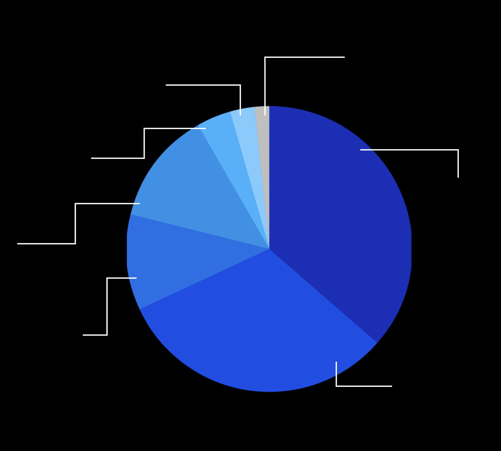
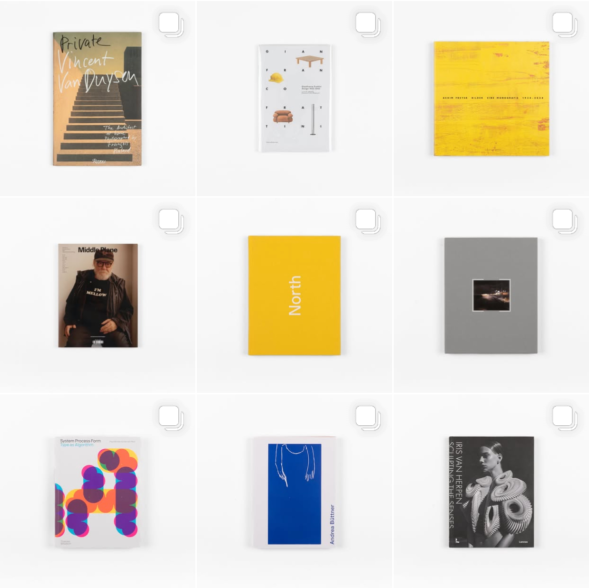
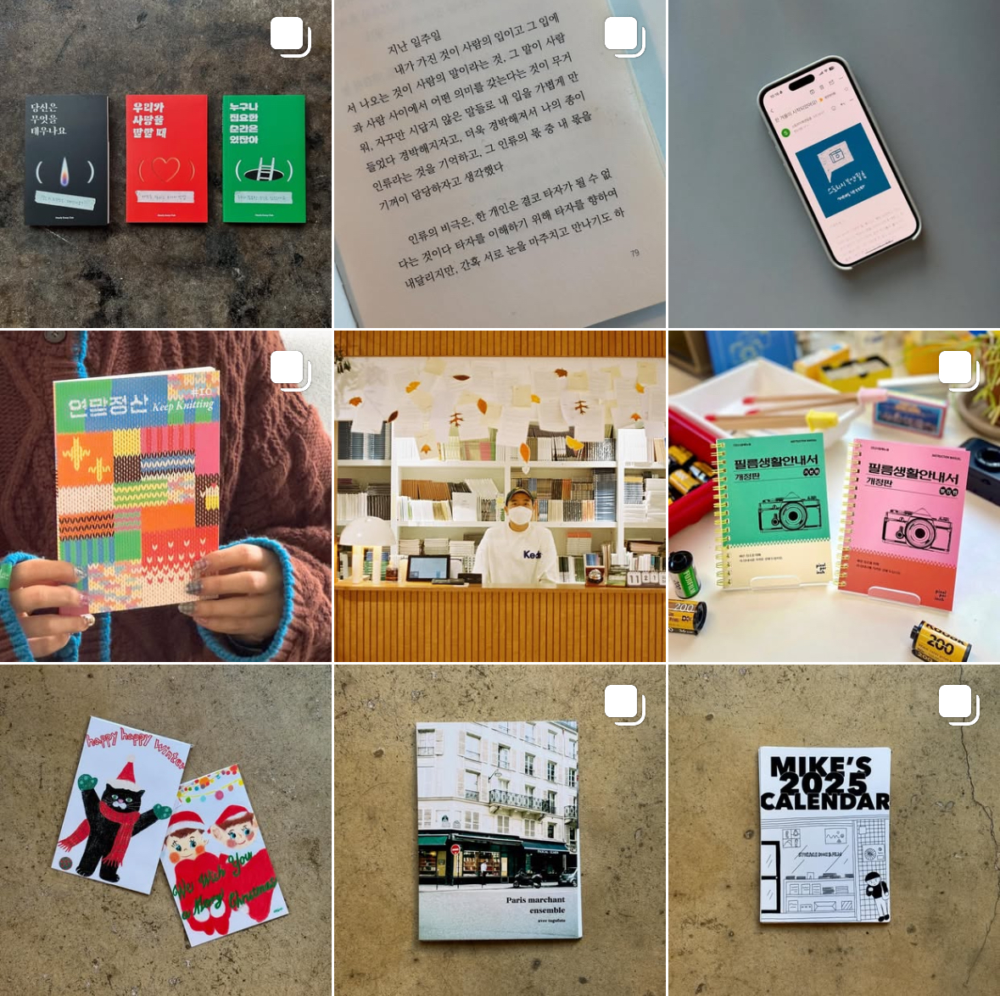
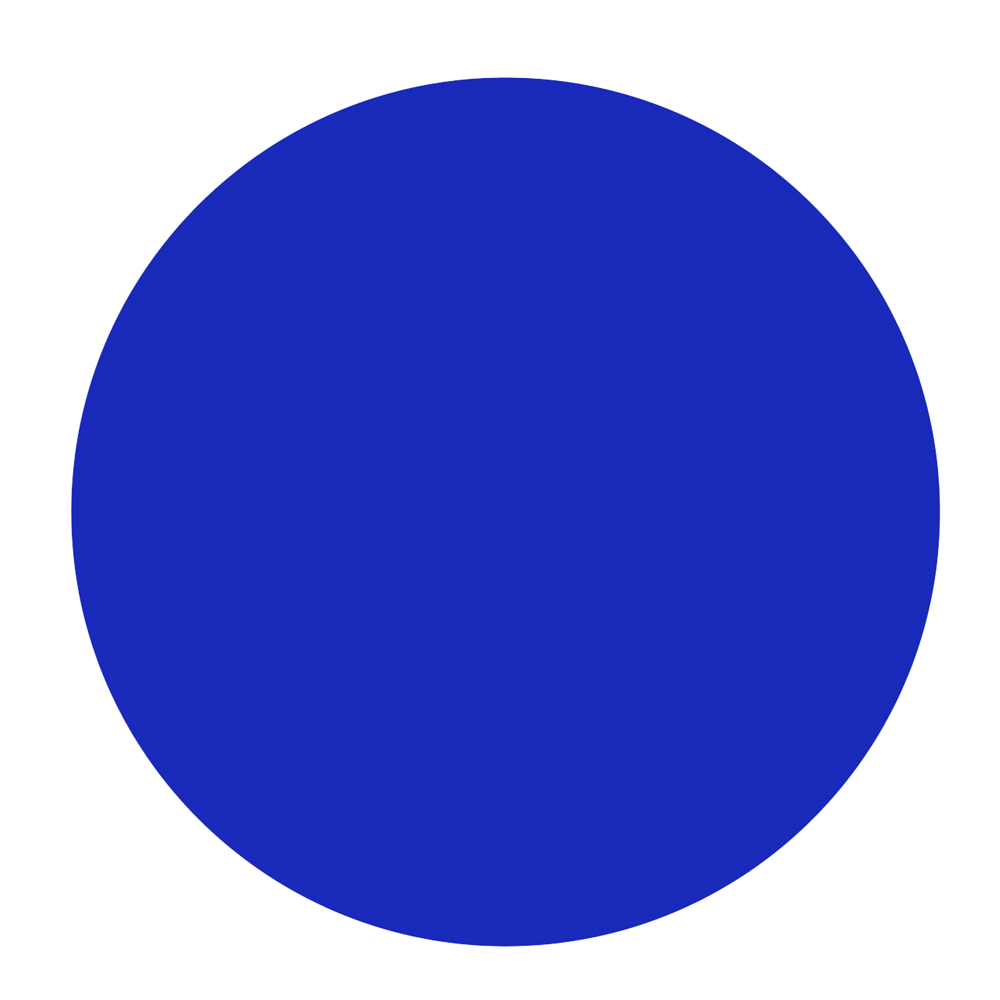
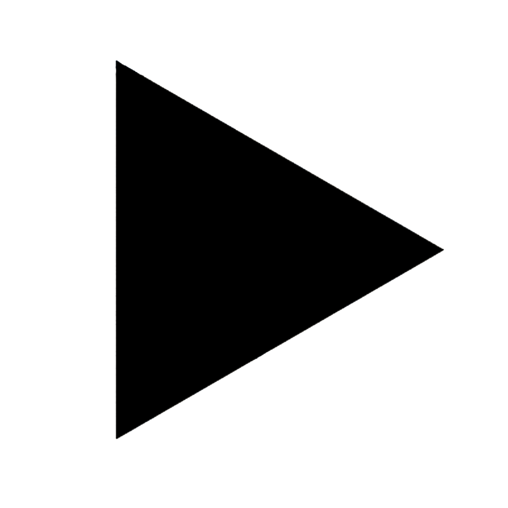
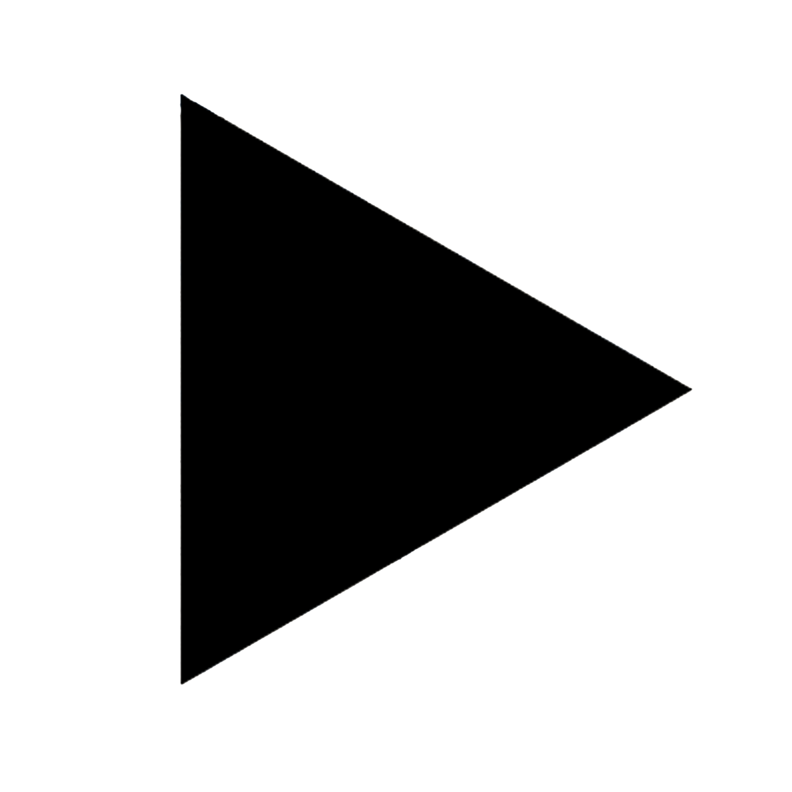

성인
10
명 중
6
명이
1 년에 책 1 권도 읽지 않습니다.
1 년에 책 1 권도 읽지 않습니다.
알고 계셨나요?
스크롤하여 더 알아보기

당신은 왜 책을 읽지 않나요?
일(공부) 때문에 시간이 없어서
책 이외의 매체를 사용해서
책 읽는 습관이 들지 않아서
10.3%
29%
다른 여가/취미 활동을 해서
11.7%
시력이 나빠 글자가 잘 보이지 않아서
3.5%
책 읽기가 재미 없어서
2.5%
독서의 필요성을 느끼지 못해서
1.5%
33.3%
책에 대한 애정이 부족한 이들은 주목.
재미있는 책을 직접 보고 만지는 것 만큼
책과 가까워지는 좋은 방법은 없습니다. 아래 서점을 방문해보세요!
재미있는 책을 직접 보고 만지는 것 만큼
책과 가까워지는 좋은 방법은 없습니다. 아래 서점을 방문해보세요!
홈페이지 방문하기 !

POST POETICS
서울 용산구 이태원로54길 19
다양한 아트북 구매 가능
매월 마지막 주 월요일 휴무
서울 용산구 이태원로54길 19
다양한 아트북 구매 가능
매월 마지막 주 월요일 휴무
홈페이지 방문하기 !
홈페이지 방문하기 !
The Book Society
서울 종로구 자하문로19길 25 지하1층
서적 판매 외 여러 워크샵과 북 토크 진행
월요일 휴무
서울 종로구 자하문로19길 25 지하1층
서적 판매 외 여러 워크샵과 북 토크 진행
월요일 휴무
Storage Book & Flim
서울 용산구 신흥로 115-1 1층
월요일 휴무
서적 이외 여러 굿즈도 함께 판매

서울 용산구 신흥로 115-1 1층
월요일 휴무
서적 이외 여러 굿즈도 함께 판매
오프라인 서점 방문하기
2
3
아양도서관
경기도 안성시 아양로 88
경기도 안성시 아양로 88
안성시립도서관
경기도 안성시 안성맞춤대로 1150
경기도 안성시 안성맞춤대로 1150
아양도서관
경기도 안성시 안성맞춤대로 1150
경기도 안성시 안성맞춤대로 1150

안성시립도서관
경기도 안성시 안성맞춤대로 1150
경기도 안성시 안성맞춤대로 1150
주변 도서관 방문하기


성인 기준 책을 읽지 못하는 가장 큰 이유는
일을 하느라 시간이 없기 때문이 가장 크다는 것 입니다.
시간 부족 이외의 이유는 책읽기에 흥미를 느끼지 못하거나,
책 읽기보다 재미있는 활동을 하기 때문이죠.
일을 하느라 시간이 없기 때문이 가장 크다는 것 입니다.
시간 부족 이외의 이유는 책읽기에 흥미를 느끼지 못하거나,
책 읽기보다 재미있는 활동을 하기 때문이죠.
문화체육관광부 ‘2023년 국민독서실태조사' 에 따르면,
성인 연간 독서량은 3.9권으로 나타났으며
1년에 책을 한 권 이상 읽은 비율은 무려 43%에 그치지 않았습니다.
단 1권도 책을 읽지 않는 성인이 얼마나 많은지,
느껴지시나요?
성인 연간 독서량은 3.9권으로 나타났으며
1년에 책을 한 권 이상 읽은 비율은 무려 43%에 그치지 않았습니다.
단 1권도 책을 읽지 않는 성인이 얼마나 많은지,
느껴지시나요?
점점 줄어드는 독서량
도서관이 어디 있는지 알지 못하여 책을 읽지 못하고 있나요?
아래 정보를 확인하여 보세요.
아래 정보를 확인하여 보세요.
책의 중요성을 알고 있음에도 시간에 쫓겨 읽지 못하는
바쁜 현대인의 현실
바쁜 현대인의 현실
책 안읽는 대한민국
해결방법 알아보기

1

73.7
72.2
67.4
55.4
46.9
62.3

1년간 책을
한 권 이상
읽은 성인 비율
43
%
성인 연간 종합독서량
3.9
권
 
